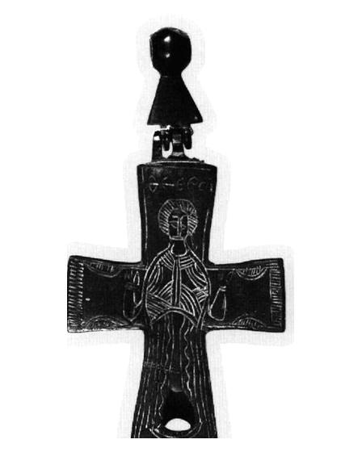
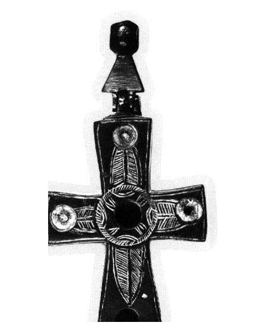

Catalog › CE-0377 · EVA2006-10
Encolpion bivalv de aliaj de cupru, cat. 10, colecție privată
nedatat · loc necunoscut · Colecție privată (Οικογένεια Γ. και Φ. Νοταρά)
double-sided reliquary cross (enkolpion), altul; nedatat; find spot unknown; kept at Colecție privată (Οικογένεια Γ. και Φ. Νοταρά).




Identificare
- Categorie
- Encolpion bivalv (relicvar)
- Material
- Altul
- Tehnică
- Gravare (incizie)
- Dimensiuni
- Î 78 × L 52 mm
Iconografie
- Avers
- Neidentificat
- Descriere avers
- Figură schematică în rugăciune, cu nimb; deasupra capului inscripția; veșmântul are, în partea de sus, fascicule de motive curbe gravate, iar în partea de jos linii drepte și ondulate; între mâini și capetele brațelor motive decorative curbe, liniare, iar la capete benzi din linii orizontale mici.
- Revers
- Ornament geometric
- Descriere revers
- Motive în formă de frunză umplu cele patru brațe; în centru un cerc gravat; la capetele brațelor și în centrul cercului, cavități pentru pietre decorative sau alte elemente.
- Inscripții
- ΘΕΟ ΡΟ (Θεόδωρος;)
- Limba
- Greacă
Datare și atribuire
- Datare
- nedatat
- Tipologie
- Evangelatou-Notara 2006, ενότητα 3 (cat. 10)
Descoperire
- Context
- Colecție (fără context)
Păstrare și referințe
- Colecție
- Colecție privată (Οικογένεια Γ. και Φ. Νοταρά)
- Bibliografie
- Φ. Ευαγγελάτου-Νοταρά (F. Evangelatou-Notara), Βυζαντινοί χάλκινοι σταυροί σε ιδιωτική συλλογή, în „Δελτίον της Χριστιανικής Αρχαιολογικής Εταιρείας”, 27 (2006), p. 371–380 [Evangelatou-Notara 2006], p. 375–376, cat. nr. 10, reprodusă la Εικ. 10 (p. 376). doi: 10.12681/dchae.496; https://doi.org/10.12681/dchae.496
- Figura
- Εικ. 10
- Planșe
- Evangelatou-Notara 2006, p. 376
- Analogii
- Decor asemănător pe cruci: Rom und Byzanz, p. 200, nr. 290 (cruce de argint cu niello) și p. 201, nr. 294 (cruce de bronz); Συλλογές Ευαγγέλου Αβέρωφ, p. 103, nr. 163 (cruce de bronz) (după autor).
- Observații
- Dimensiuni: 7,8 × 5,2 cm; inel de suspendare 3,3 cm. Material: aliaj de cupru; cele două părți sunt legate printr-un cui între balamale, iar inelul poligonal se leagă de cruce printr-o prelungire trapezoidală; brațele sunt ușor lățite. Autorul propune, cu semn de întrebare, numele Theodoros. Piesa a fost cumpărată de la anticari din Atena și din Londra (indicație dată pentru întreaga colecție); locul și condițiile descoperirii nu sunt cunoscute. Material: „aliaj de cupru” (κράμα χαλκού), după sursă. Coordonate: nu sunt date în sursă.
Citare: Corpus Encolpiorum, CE-0377, Encolpion bivalv de aliaj de cupru, cat. 10, colecție privată, --root/piese/EVA2006-10/ (accesat 2026-10-20).